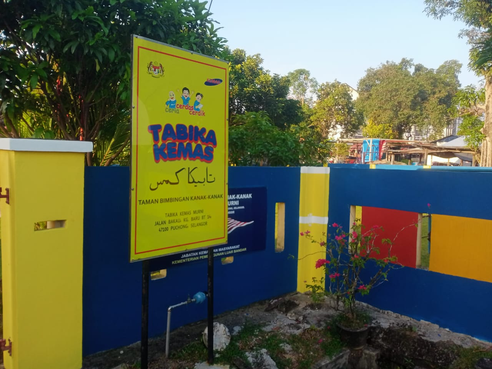
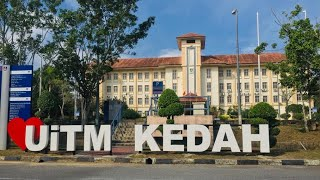

My Education Journey
| Education Level | Image | Year | Description |
|---|---|---|---|
| Kindergarten |  | 2010 - 2011 |
My kindergarten was Tabika Kemas. This was my very first time stepping into the world of school. It was here that I learned so many new
things like writing, coloring, drawing, and more. It was also the first time I got to make friends and interact with kids my age.
Even though I don’t remember much from that time, I believe it were full and enjoyable during those years. |
| Primary School |  |
2012 - 2017 |
My primary school was SK Puchong Batu 14. This was where I really started to grow academically. I learned a wide range of subjects like
Islamic Education, Physical Education, Arabic, and History. At first, it was a big change from kindergarten — I still remember staring at the wall clock,
hoping time would pass quickly because the lessons felt so long!
My school had two sessions: morning and afternoon. Students in Years 4, 5, and 6 attended in the morning from 7:30 a.m. to 1:00 p.m., while Years 1, 2, and 3 had classes in the afternoon from 1:30 p.m. to 6:30 p.m. Even so, I never had to worry about being late to school because the distance between my house and the school was less than 50 meters. Yes — 50 meters! It sounds a bit crazy, but that’s the truth! All in all, my experience in primary school was super fun and full of great memories. I honestly enjoyed every moment of it! |
| Secondary School |  |
2018 - 2022 |
My secondary school was SMK Puchong Batu 14.This was when I started focusing more on my academic achievements, hoping to become a better
student and make my parents proud. To be honest, there wasn't a huge difference between secondary school and primary school — except for having new friends
and teachers (well, that’s just my opinion).
I can't forget about my Form 4 and 5 moments, especially when I took new subjects like Household Science, where I learned how to cook and sew (I honestly thought it was a bit funny for a guy to take this subject at first hehe..), and Agricultural Science, where I learned about planting and farming. Even though it was tough at first, those final two years became my favorite years in secondary school. I also made some amazing friends like Aiman, Farish, Kimi, Farhan, and many more. It’s these moments that made me realize how important it is to appreciate our time in school. (And yes... I really wish I had a time machine so I could go back to those days!) |
| Diploma |  | 2023 - Present |
I am currently continuing my studies at Universiti Teknologi MARA (UiTM), Sungai Petani campus, pursuing a diploma in Library Informatics.
At university, I can really feel a big difference compared to life in secondary school. On top of that, this is the first time in my life that I’m living far
away from my family — and to be honest, during the first week, I almost cried because I missed my family back in Selangor so much.
But over time, I started getting used to life here. I learned how to be independent, and it’s also here where I met some amazing and funny friends like Amir, Iqbal, Rifqie, fathi, hafizi, aiman and many more. University life has taught me a lot about the meaning of life. And even though it was tough in the beginning, it’s actually been a really fun experience overall. (Time really flies I guess because you know what, I’m already in Semester 4 hehe...) |